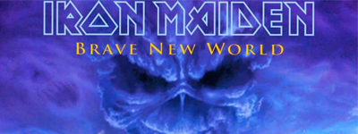
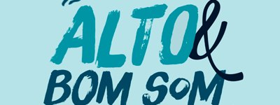
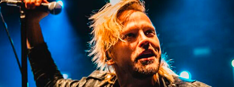
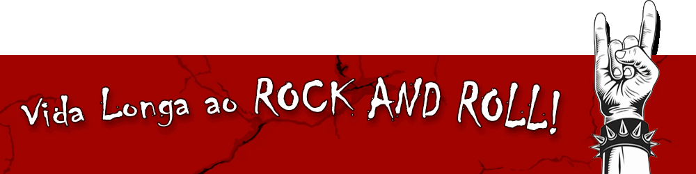

Artigos
Aqui você encontrará uma variedade de conteúdos que abrangem desde a história do rock até as últimas tendências do gênero. Nossos artigos vão além das músicas, explorando as personalidades cativantes dos artistas, as influências culturais e os momentos marcantes que moldaram a história do rock. 🤘✒️

• Iron Maiden: 5 destaques preciosos de Brave New World que merecem atenção especial dos fãs
1. The Wicker Man: É impossível falar de Brave New World e não citar o riff inicial da canção! Tecnicamente é simples, o que motiva a famigerada frase: Por que não pensei nisso antes? Bem, devaneios à parte, é da simplicidade que vem, em muitas das vezes, a genialidade. O riff de The Wicker Man é um belo exemplo disso.2. Blood Brothers: Muitos fãs criticam o playing e performance de Janick Gers, contudo, em Blood Brothers, o guitarrista concebeu uma obra-prima no solo final da canção. Notas escolhidas a dedo e uma interpretação impecável do músico.
3. Sabor progressivo: Nunca foi segredo que algumas das maiores influências do Iron reside na seara progressiva como Jethro Tull e Genesis. Em Brave New World é possível perceber um acentuado flerte com o intrincado estilo musical em Dream of Mirrors e The Nomad, por exemplo.
4. Os três mosqueteiros: Na época em que o álbum saiu, Steve Harris falou de forma clara e direta que sempre quis ter três guitarristas no grupo. Bem, o sonho do Big Boss foi realizado! E não precisa de muito esforço, tampouco ouvido absoluto para captar as nuances e timbre dos três guitarristas. Curtir o som do grupo e observar os arranjos de guitarra é um exercício bacana e garante boas horas de aprendizagem.
4. Os três mosqueteiros: O Iron nunca escreveu letras tolas e infantis; falar sobre futilidade é a especialidade de bandas como Mötley Crüe e Poison. Mesmo com o já alto padrão lírico estabelecido, o grupo conseguiu avançar e trouxe letras profundas sobre um mundo distópico e estéril. Time perfeito para o mundo tecnológico e zumbificado que já estava se mostrando em tal época.

• Alto e bom som: 15 músicas dos anos 90 para curtir com o volume no talo
A música criada nos anos 90 promove sensações contraditórias, pois há materiais que soam como um bálsamo aos ouvidos, contudo existem canções e discos que mais parecem instrumentos de tortura, visto que são, na melhor das hipóteses, um desastre rítmico, melódico e harmônico.O teor artístico e sonoro de tal década fora calcado numa maior pluralidade de sons; deixou de ser concentrado, por exemplo, no glam metal. Novas alquimias musicais ganharam vida, dessa forma, estilos como gothic metal, industrial metal, groove metal, nu metal e grunge foram impulsionados a posições de maior destaque e prestígio.
Concomitantemente, as maiores estrelas de outrora puderam, sem a pompa, hedonismo e ostentação de anos anteriores, continuar suas carreiras e tirar da cartola obras musicais relevantes que lograram êxito no implacável teste do tempo.
Então, convidamos você a vir com a gente numa breve viagem aos anos 90, com 15 músicas dando uma ligeira ideia do quão bacana foi tal década:
2. Alice in Chains – Man in the Box (1990)
3. Faith No More – Epic (1990)
4. Korn – Freak on a Leash (1999)
6. Type O Negative – Christian Woman (1993)
7. Nirvana – Smells Like Teen Spirit (1991)
8. Rage Against the Machine – Killing in the Name (1992)
9. Queensrÿche – Silent Lucidity (1990)
10. Slipknot – Wait and Bleed (1999)
11. AC/DC – Thunderstruck (1990)
12. Ozzy Osbourne – Mama I’m Coming Home (1991)
13. Sepultura – Roots Bloody Roots (1996)
14. Rob Zombie – Dragula (1998)
15. Metallica – Enter Sandman (1991)

• Skid Row ressurge das cinzas com o vocalista Erik Grönwall
Se firmar no mercado fonográfico é sem dúvida um grande desafio. Bem, as dificuldades se mostram caso o artista ou grupo tenha a intenção de se alicerçar com relevância artística; caso o foco esteja nos likes, selfies, dancinhas e caras e bocas, o tosco, malfeito e infame recaem como uma luva.Se firmar no mercado fonográfico é sem dúvida um grande desafio. Bem, as dificuldades se mostram caso o artista ou grupo tenha a intenção de se alicerçar com relevância artística; caso o foco esteja nos likes, selfies, dancinhas e caras e bocas, o tosco, malfeito e infame recaem como uma luva.Entrar no jogo do show business não significa que os desafios de diferentes ordens que cismam se prostrarem no caminho de forma irredutível e intransigente vão desaparecer como passo de mágica ou inexistirem. O artista ou banda que tenha essa visão romântica que tudo são as mil maravilhas está pronta para cair nas muitas armadilhas do mercado musical.
Com isso, quem teve a oportunidade de se edificar artisticamente e não soube e ou não pôde gerenciar os próprios problemas e os muitos revezes mercadológicos que vão bater à porta sem pedir licença, raramente encontram uma segunda chance para colocar a cabeça para fora da água e vislumbrar uma carreira de sucesso.
No entanto, há exceções aqui e acolá, e um bom exemplo de uma banda que ressurgiu recentemente das cinzas é o Skid Row! Isso mesmo, os astros se alinharam e o mercúrio deixou de estar retrógrado ao grupo de hard rock de Nova Jérsei, e o motivo para chegada de ares mais leves e benfazejos fora a entrada do vocalista sueco Erik Grönwall.
Com a saída de Sebastian Bach, em meados da década de 1990, o Skid Row vinha colecionando derrocada em cima de derrocada. Álbuns com pouca ou nenhuma consistência musical, shows e erformances desastrosas e toda sorte de descalabro assombraram o grupo nos últimos anos.
A tábua de salvação da banda saiu das terras geladas de Knivsta, na Suécia, com o carismático Grönwall! Na verdade, a salvação fora mutua, neste caso, pois Grönwall precisou deixar a banda H.E.A.T. para cuidar de sua saúde, em 2020. O músico fora diagnosticado com leucemia, com isso as suas atividades profissionais ficaram paralisadas por um bom tempo. Depois do transplante de medula, o músico voltou para a cena e, em pouco tempo, recebeu o convite para comandar o microfone do lendário grupo.
Sabiamente, a banda refez, por exemplo, as linhas vocais de seu mais recente álbum de estúdio The Gang's All Here, já que se deu conta do tesouro musical que está em suas mãos. Já ao vivo, Erik vem provando show após show que é o substituto de Bach que o grupo sempre sonhou. O futuro do Skid Row parece, mais uma vez, promissor e próspero, é só mexer as peças no tabuleiro de forma madura e inteligente.
